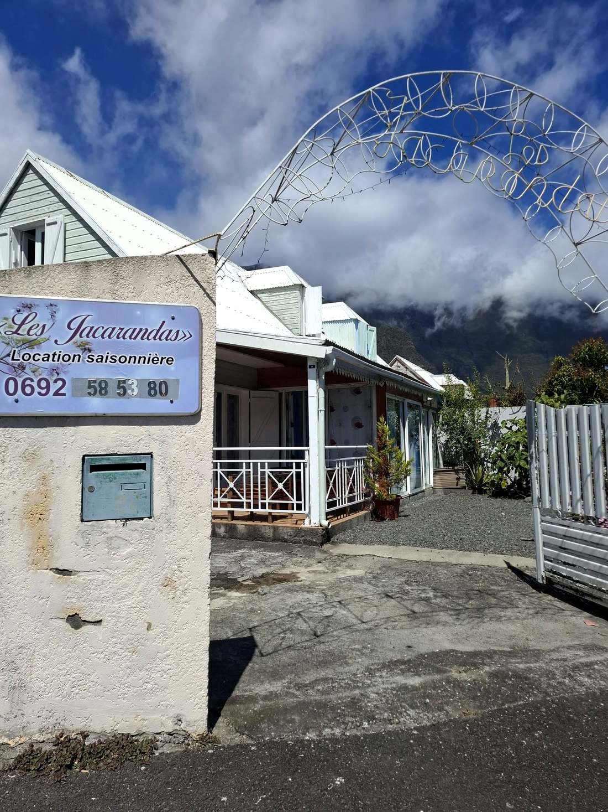
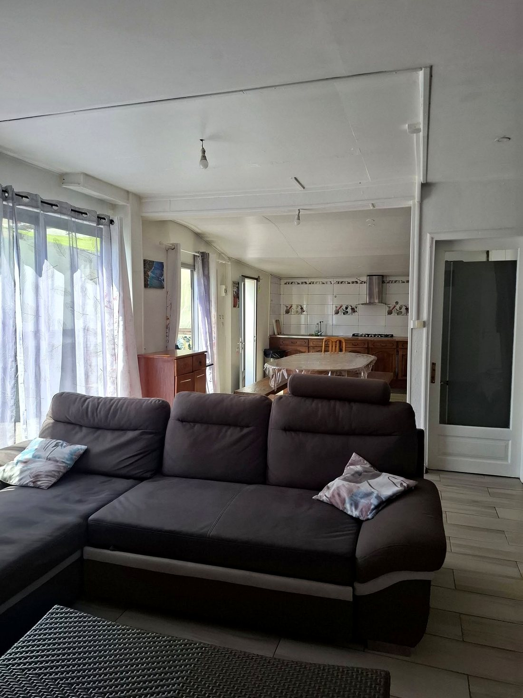
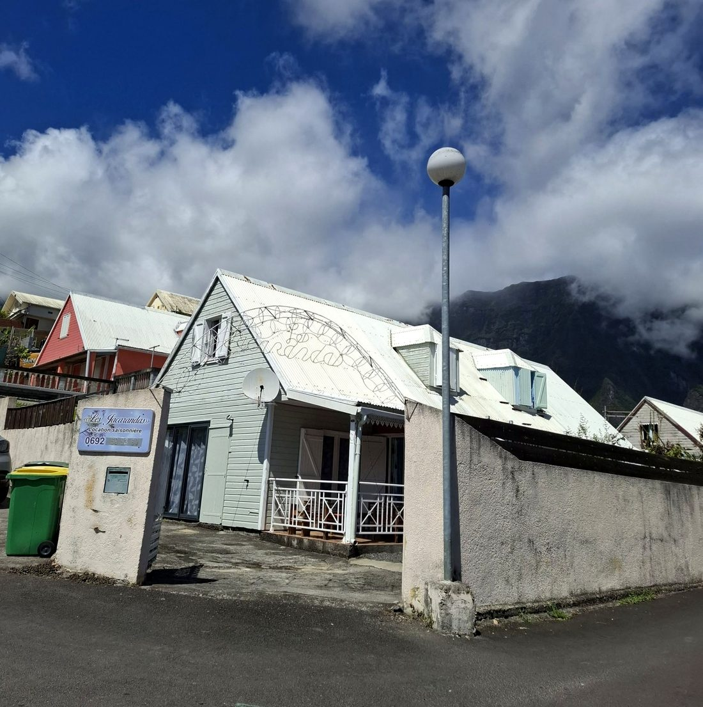
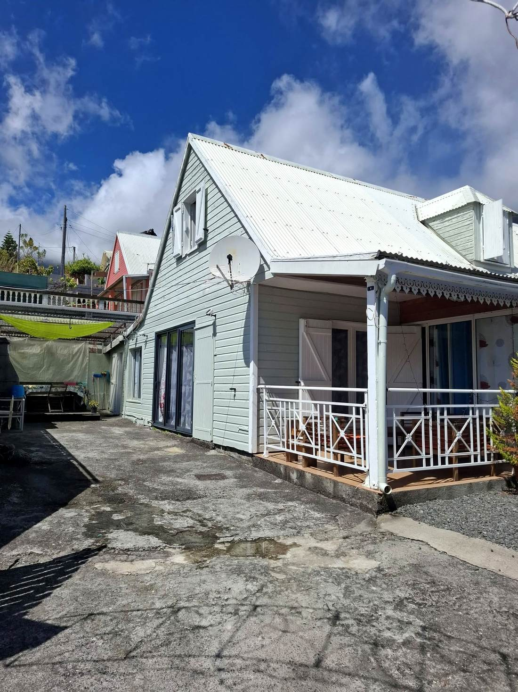
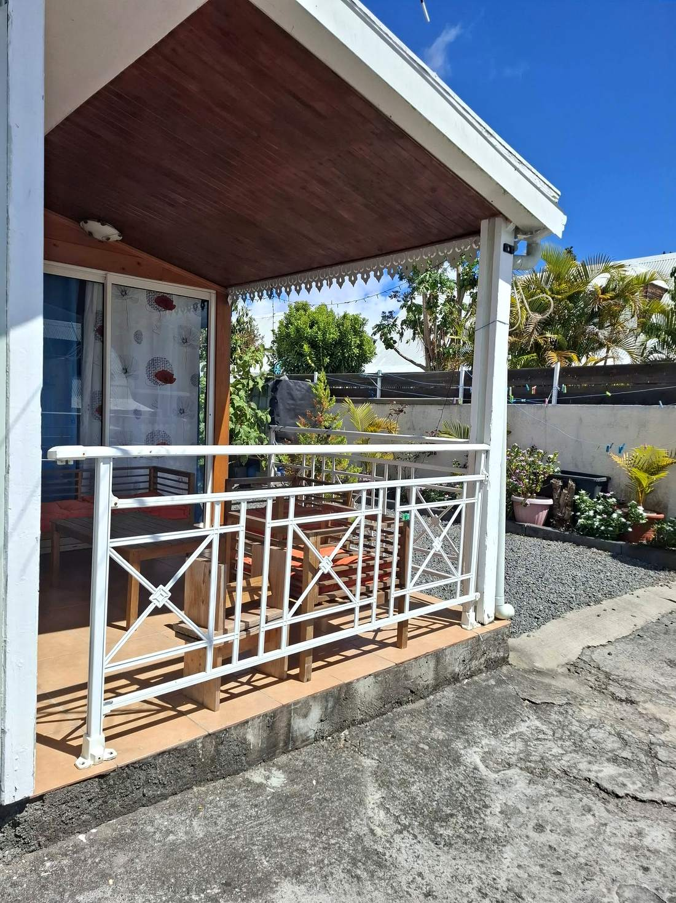
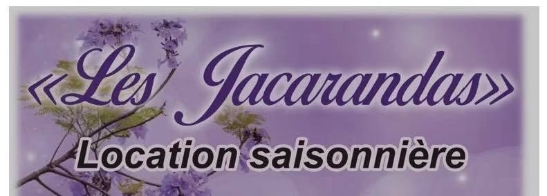

Location saisonnière · Cirque de Cilaos
« Les Jacarandas »
Cilaos · La Réunion
Votre petit coin de bonheur au cœur des montagnes réunionnaises.
22 allée des Benjoins · Cilaos · à dix minutes à pied du village
La maison
Un petit chez-vous au cœur du cirque
« Nichée au cœur du magnifique cirque de Cilaos, notre maison de trois chambres vous accueille dans un cadre paisible et authentique, à seulement dix minutes à pied du village. »
Une maison simple, chaleureuse et accueillante, idéale pour les familles ou les groupes d'amis : on pose les sacs, on profite de la fraîcheur de Cilaos, et le village se découvre à pied.


Au réveil
Les montagnes à votre fenêtre
Depuis l'une des chambres, un panorama exceptionnel sur les sommets de Cilaos : « un petit coin de paradis où la nature s'invite directement à votre fenêtre ».
En images
Bienvenue aux Jacarandas


Faites glisser pour découvrir la maison →
Cilaos à pied
Tout le village au bout de la rue
La voiture peut rester garée : le centre-ville, les commerces, les restaurants et les départs de nombreux sentiers de randonnée sont accessibles à pied.
- Les sentiers du cirque, pour se ressourcer et découvrir ses merveilles
- Commerces et restaurants du village, à quelques pas
- Un endroit parfait pour se retrouver en famille ou entre amis
« Une petite parenthèse de douceur à Cilaos. »
Réservez en direct
Un appel, et votre séjour est entre de bonnes mains
Pour vos dates et les tarifs, la maison vous répond en message privé ou par téléphone. Le bon réflexe : confirmer votre réservation directement à ce numéro.
Offrir pour Noël
Et si vous offriez Cilaos ?
Quelques nuits aux Jacarandas, en famille ou entre amis, au milieu des montagnes : une jolie idée à glisser sous le sapin pour celles et ceux que vous aimez.
Un séjour aux Jacarandas à offrir
Parlez-en directement avec la maison pour imaginer le cadeau : nombre de nuits, période, petit mot pour la personne qui le reçoit.
Offrir un séjourDates du séjour à convenir ensemble selon les disponibilités de la maison.
Contact
À bientôt à Cilaos
Comment venir
- À l'entrée du village, repérez le mur avec l'inscription « Bienvenue à Cilaos ».
- Juste après ce mur, prenez la première rue à droite.
- Continuez quelques mètres… vous êtes arrivés !
Stationnement disponible sur place · astuce : tapez « Les Jacarandas Cilaos » dans Google Maps pour un guidage encore plus simple.
